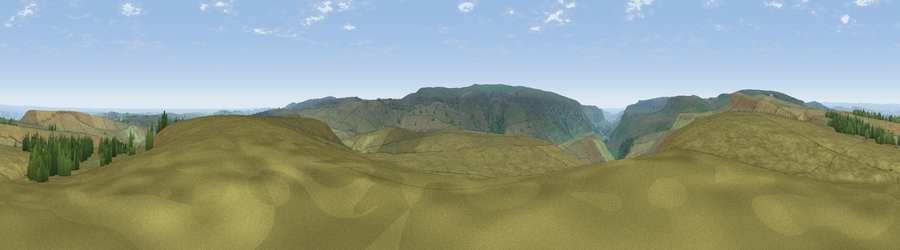

Viewpoint near Hade Edge
#9557 in England · top 11% of its area beats it · near Hade EdgeWhere it is
The exact computed spot (SE 12462 01725). Click the marker for map links.
The view, rendered

A 360° render of this exact spot computed from the terrain model, tree cover and land cover — summer colours, afternoon light, calibrated against photographs of famous viewpoints. Real trees, hedges and buildings will differ in detail.
The panorama
Grey silhouette: terrain skyline in each direction (720 bearings, Earth curvature and refraction included). Dashed green: skyline with trees (+15 m) and buildings (+8 m) as obstacles. Blue strip: how far the ground is visible on each bearing.
Where the view opens
Wedge length = distance to the farthest visible ground on that bearing (vegetation-aware). Rings at 10, 25 and 50 km.
What fills the view
94% grassland · 5% woodland ·
Angular shares of the visible panorama (visual magnitude), not map area. Landscape diversity 0.12 (0–1 Shannon).
Key numbers
More beautiful places nearby
The staircase of upgrades: each row has a higher view potential than everything closer. Driving times are estimates from straight-line distance, calibrated against real road routing — check an actual route before setting out.
| Place | Direction | Drive | Score |
|---|---|---|---|
| Viewpoint near Lane | WNW · 2 km | ~5 min | 66.1 |
| Viewpoint near Lane | NW · 5 km | ~11 min | 68.5 |
| Viewpoint near Upper Midhope | SE · 7 km | ~15 min | 68.8 |
| Cheese Gate Nab | NE · 7 km | ~15 min | 69.9 |
| Viewpoint near Jackson Bridge | NE · 8 km | ~16 min | 73.5 |
| Viewpoint near Greenfield | W · 12 km | ~23 min | 76.0 |
| Viewpoint near Carrbrook | W · 13 km | ~25 min | 77.1 |
| Viewpoint near Edenfield | WNW · 35 km | ~53 min | 77.5 |
53.51206, -1.81354 · source: screening · position refined by local search. Computed location — check access rights before visiting.